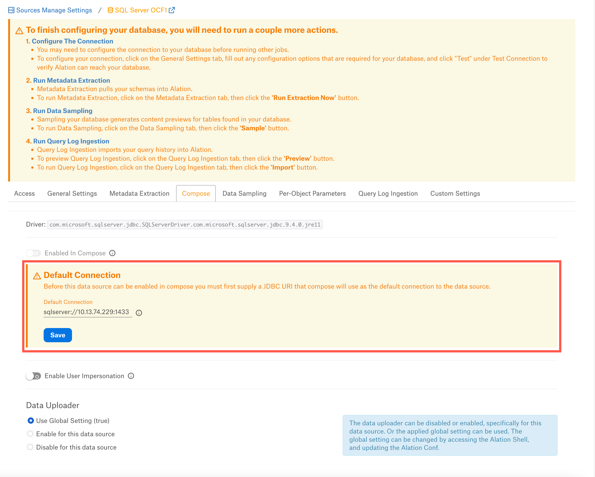

SQL Server Connector: Install and Configure¶
Alation Cloud Service Applies to Alation Cloud Service instances of Alation
Customer Managed Applies to customer-managed instances of Alation
Network Configuration¶
Open outbound TCP port 1433 to SQL Server (default).
Note
SQL Server instances can listen on non-standard ports. If you connect Alation to a SQL Server instance, then open the appropriate outbound TCP ports from the Alation server.
Service Account¶
Alation supports both SQL Server authentication and Windows authentication.
For Windows authentication, SQL Server must be configured for Kerberos, SQL Server default, or instance SPNs must be registered with Active Directory. The following information is required during configuration if SQL Server uses Windows authentication:
Active Directory realm
Active Directory server IP or DNS name
To verify that the SQL Server is configured for Kerberos, run the following command from a Windows CMD prompt. The command must be run on a computer in the same realm as SQL Server:
setspn -L [SQL-server-hostname]
The following screenshot is an example output of the setspn command showing SPNs for a SQL Server default instance:
We recommend using an Active Directory service account. This enables Alation to read log files generated by extended events. A SQL Server username and password also reads log files generated by extended events.
Grant Permissions for Metadata Extraction¶
Grant Access to Databases, Schemas, and Tables¶
Grant the service account access to the database(s), schema(s), and table(s) that you want to be cataloged in Alation after metadata extraction:
Grant Permissions on Database(s)¶
Grants the permissions to see the definitions of structures in the database, including tables, views, or stored procedures.
Set the connection to the desired database by using the following query:
USE <database_name>
After that, run the following query:
GRANT VIEW DEFINITION TO <alation_user>;
Note: Use this query for every database in an instance.
Grant Permissions on Specific Schema(s)¶
GRANT VIEW DEFINITION ON SCHEMA::<schema> TO <alation_user>;
Grant Permissions on Definitions of Any Object¶
Grant permissions to see the definition of any object, such as endpoints, in any database users have at the server level:
Use master;
GRANT VIEW ANY DEFINITION TO <alation_user>;
GRANT SELECT or VIEW ANY DEFINITION at Database or Schema level to alation (service account)
JDBC URI¶
Depending on the type of your SQL Server deployment, Alation may support the following authentication types:
Basic authentication
NTLM authentication
Kerberos authentication
SSL authentication
Refer to SQL Server Connector: Overview for details on which authentication methods are supported.
When building the URI, include the required components depending on the authentication method.
Note
Starting in version 1.1.4.1957, the connector uses a SQL Server driver that assumes that the SSL mode is enabled by default unless the value
encrypt=falseis explicitly passed in the JDBC URI.The only exception is the Azure SQL Managed Instance data source, where basic authentication will work with or without explicitly including the parameter
encrypt=falseinto the URI.
Basic/NTLM Authentication¶
Hostname or IP of the instance
Port number
Database name (optional)
The parameter
encrypt=falseto indicate that you are not using an SSL-enabled connection
Applies from connector version 1.1.4:
NTLM + SSL Authentication is supported from connector version 1.3.7.7492
Append the parameter encrypt=false to the URI.
Format¶
sqlserver://<Host_Name>:<Port_Number>;databaseName=<db_name>;encrypt=false
Example¶
sqlserver://10.13.47.231:1433;databaseName=SQL;encrypt=false
Note
For an Azure Managed Instance data source, both formats will work: sqlserver://<hostname or ip>:<port>;encrypt=false or sqlserver://<hostname or ip>:<port>.
NTLM Authentication for Dynamic Port¶
For dynamic port, leave the option Enable NTLM unchecked and don’t specify a port number.
Format¶
sqlserver://<hostname or ip>;domain=<domain name>;authenticationScheme=NTLM;integratedSecurity=true;encrypt=false
Example¶
sqlserver://10.13.80.247;domain=al100794.test.local;authenticationScheme=NTLM;integratedSecurity=true;encrypt=false
Kerberos Authentication¶
Hostname or IP of the instance
Port number
Server SPN (optional)
The parameter
encrypt=falseto indicate that you are not using an SSL-enabled connectionNote
Kerberos authentication requires the krb5.conf file to be uploaded in the General Settings > Connector Settings section when configuring the data source settings.
Applies from connector version 1.1.4:
Append the parameter encrypt=false to the URI.
Format¶
sqlserver://<Host_name>:<Port_Number>;ServerSpn=<Server_SPN>;integratedSecurity=true;authenticationScheme=JavaKerberos;encrypt=false
Example¶
sqlserver://10.13.47.231:1433;ServerSpn=MSSQLSvc/EC2DRTS-7FA6452.al94278.test.local;integratedSecurity=true;authenticationScheme=JavaKerberos;encrypt=false
SSL Authentication¶
Hostname or IP of the instance
Port number
- The SSL-related parameters, such as
encrypt=true
hostNameInCertificate=<CN name>
To get the CN name, run the below command and use the value after CN=
openssl x509 -noout -subject -in <certificate_name>.crtNote
The SSL certificate must be uploaded in the General Settings > Connector Settings section when configuring the data source settings.
NTLM + SSL Authentication is supported from connector version 1.3.7.7492
Applies from connector version 1.1.4:
Append the parameter encrypt=true to the URI.
Format¶
sqlserver://<Host_Name>:<Port_Number>;encrypt=true;hostNameInCertificate=<CN name>
Example¶
sqlserver://10.13.82.165:1433;encrypt=true;hostNameInCertificate=abc.corp.net
Configuration in Alation¶
STEP 1: Install the Connector¶
Alation On-Premise¶
Important
Installation of OCF connectors requires Alation Connector Manager to be installed as a prerequisite.
To install an OCF connector:
If this has not been done on your instance, install the Alation Connector Manager: Install Alation Connector Manager.
Ensure that the OCF connector Zip file is available on your local machine.
Install the connector on the Connectors Dashboard page using the steps in Manage Connectors.
Alation Cloud Service¶
Note
On Alation Cloud Service instances, Alation Connector Manager is available by default.
Depending on your network configuration, you may need to use Alation Agent to connect to databases.
Connection via Alation Agent¶
Ensure that Alation Agent is enabled on your Alation instance. If necessary, create a Support ticket with Alation for an Alation representative to enable the Alation Agent feature on your instance and to receive the Alation Agent installer.
Connection Without Agent¶
To install an OCF connector:
Ensure that the OCF connector Zip file is available on your local machine.
Install the connector on the Connectors Dashboard page using the steps in Manage Connectors.
STEP 2: Create and Configure a New Data Source¶
On the Access tab, set the data source visibility using these options:
Public Data Source—The data source will be visible to all users of the catalog.
Private Data Source—The data source will be visible to the users allowed access to the data source by Data Source Admins.
You can add new Data Source Admin users in the Data Source Admins section.
The name of this connector is SQL Server OCF Connector.
Access¶
On the Access tab, set the data source visibility using these options:
Public Data Source—The data source will be visible to all users of the catalog.
Private Data Source—The data source will be visible to the users allowed access to the data source by Data Source Admins.
You can add new Data Source Admin users in the Data Source Admins section.
General Settings¶
Note
This section describes configuring settings for credentials and connection information stored in the Alation database. If your organization has configured Azure KeyVault or AWS Secrets Manager to hold such information, the user interface for the General Settings page will change to include the following icons to the right of most options:

{kind=link}
{kind=link}
By default, the database icon is selected, as shown. In the vault case, instead of the actual credential information, you enter the ID of the secret. See Configure Secrets for OCF Connector Settings for details.
Perform the configuration on the General Settings tab.
Application Settings¶
Specify Application Settings if applicable. Click Save to save the changes after providing the information.
Parameter |
Description |
|---|---|
BI Connection Info |
This parameter is used to generate lineage between the current data source and another source in the catalog, for example a BI source that retrieves data from the underlying database. The parameter accepts host and port information of the corresponding BI data source connection. Use the following format: You can provide multiple values as a comma-separated list:
Find more details in BI Connection Info. |
Disable Automatic Lineage Generation |
Select this checkbox to disable automatic lineage generation from QLI, MDE, and Compose queries. By default, automatic lineage generation is enabled. |
Connector Settings¶
Data Source Connection¶
Populate the data source connection information and save the values by clicking Save in this section.
Parameter |
Description |
|---|---|
JDBC URI |
Specify the JDBC URI in the required format. |
Username |
Specify the service account username. |
Password |
Specify the service account password. |
Enable Kerberos authentication |
Select this checkbox if using Kerberos authentication and upload the krb5.conf file using the upload link under the checkbox. |
Use keytab |
Select this checkbox if using keytabs and upload the keytab file for the service account using the upload link under the checkbox. |
Enable SSL |
Enable or disable SSL authentication by selecting or clearing the Enable SSL checkbox. If the Enable SSL checkbox is enabled, upload the SSL certificate using the upload link below. |
Truststore password |
Specify the password for the SSL certificate. The password will be deleted if the data source connection is deleted. |
Enable NTLM |
Select this checkbox to use NTLM. The connector will enable NTLM while establishing the JDBC connection. |
Domain Name |
Specify the Domain Name if NTLM authentication is used. |
Logging Configuration¶
Select the logging level for the connector logs and save the values by clicking Save in this section. The available log levels are based on the Log4j framework.
Parameter |
Description |
|---|---|
Log level |
Select the log level to generate logs. The available options are INFO, DEBUG, WARN, TRACE, ERROR, FATAL, ALL. |
You can view the connector logs in Admin Settings > Manage Connectors > SQL Server OCF Connector.
Obfuscate Literals¶
Obfuscate Literals—Enable this toggle to hide actual values in the query statements that are ingested during query log ingestion or executed in Compose. This toggle is disabled by default.
Test Connection¶
Under Test Connection, click Test to validate network connectivity.
Deleting the Data Source¶
You can delete your data source from the General Settings tab. Under Delete Data Source, click Delete to delete the data source connection.
{kind=link}
Metadata Extraction¶
You can configure metadata extraction (MDE) for an OCF data source on the Metadata Extraction tab of the Settings page. Refer to Configure Metadata Extraction for OCF Data Sources for information about the available configuration options.
The default queries that the connector uses to extract metadata can be found in Extraction Queries for SQL Server. You can customize these queries to adjust extraction to your specific needs.
Metadata Extraction from Compose¶
If a table is created from Compose, users will be able to see the relevant table metadata on the catalog page without re-running MDE.
Users should use the following query format to create tables in Compose:
CREATE TABLE [CATALOG_NAME].[SCHEMA_NAME].[TABLE_NAME] ({column properties});
For creating view, catalog name needs to be included in the Compose JDBC URI on the General Settings page as database=<Catalog_Name>.
Use following query to create VIEW:
USE [CATALOG_NAME] CREATE VIEW [SCHEMA_NAME].[TABLE_NAME] AS {view condition}
Note
When you create a view from Compose, the MDE job will get triggered automatically and fail with the error EmptyStreamException. Alternately, MDE can be run manually after creating the view to extract the view on the relevant catalog page.
For lineage to be generated successfully for View, fully qualified name of the table needs to be mentioned in the view condition.
For Drop table scenario, table will be removed from catalog page and automated MDE job will not be triggered. It is an expected behaviour.
Sampling and Profiling¶
Sampling and profiling is supported. For details, see Configure Sampling and Profiling for OCF Data Sources.
Compose¶
On the Compose tab, an admin can enable the use of the Compose tool for this data source.
Before you enable Compose, provide the JDBC URI in the Default Connection field which Compose will use as a default connection and Save.
Enable the Enabled in Compose toggle to enable Compose for this data source. Select Compose Connection Sharing option based on the description in the table below:
Compose Connection Option
Description
Shared connections across tabs
This option lets users use the same connection across multiple Compose tabs.
Separate connection per tab
Users can use different connections for each Compose tab, which enables them to run multiple queries at the same time.
Select a Data Uploader option based on the description below:
Data Uploader
Description
Use Global Setting (True)
or
Use Global Setting (False)
Use the global setting option that is set in alation_conf using alation.data_uploader.enabled flag.
Users can upload data if the flag is set to true or if the flag is set to false, users cannot upload the data for any data source.
Enable for this data source
Use this option to enable the data upload for this data source and override the global setting if the global setting in alation_conf if it is set to false.
Disable for this data source
Use this option to disable the data upload for this data source and override the global setting in alation_conf if it is set to true.
Note
OAuth connection is not supported for this data source.
{kind=link}
Query Log Ingestion¶
See SQL Server Connector: Query Log Ingestion.
For SQL Server RDS QLI, see SQL Server RDS: Query Log Ingestion.
Troubleshooting¶
Refer to Troubleshooting.